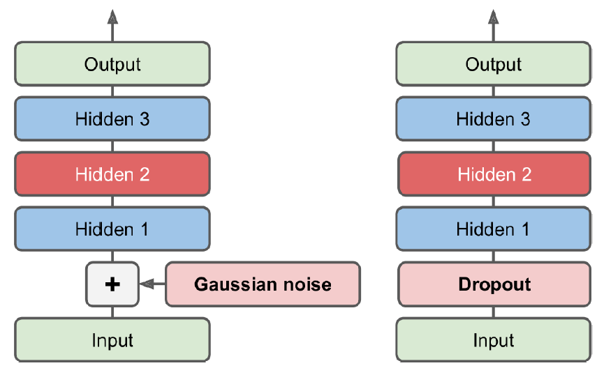
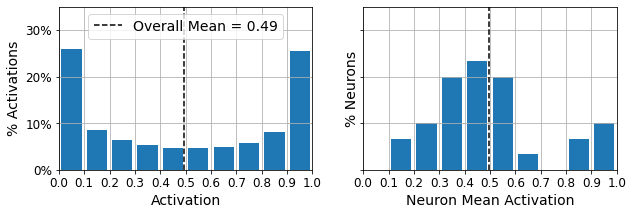
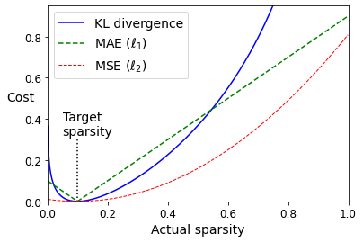
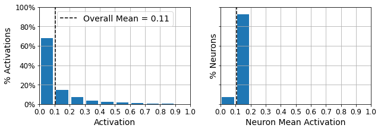

14.2 Autoencoders, Part II
Deeper autoencoders and what the latent code is for.
These notes walk through the lecture slides. The original deck is unchanged; use (slides) on the course hub if you want that PDF.
Figures and notes follow Géron, Hands-On Machine Learning; Deisenroth, Faisal, and Ong, Mathematics for Machine Learning; and Theodoridis, Machine Learning: A Bayesian and Optimization Perspective.
1. Tying weights
On a neatly symmetric autoencoder, tying weights copies each decoder matrix from the matching encoder matrix. Half as many weights. Faster training. Less overfitting.
Encoder and decoder then share features instead of learning two unrelated maps. That often reconstructs a wider set of inputs.
The stack from last time is the symmetric net this trick is built for:

2. Denoising autoencoders
A denoising autoencoder is trained to reconstruct the clean input from a noisy one. That pressure is what makes the coding useful.
Implementation: a stacked autoencoder plus noise on the encoder inputs. Use a Dropout layer or a GaussianNoise layer. Both are on only during training.

3. Sparse autoencoders
Sparsity is another constraint: add a term so that few coding neurons fire.
where is reconstruction loss (MSE is the usual example), is the coding activations, measures how dense those activations are, and is how hard you push sparsity.
If a neuron may speak only rarely, it had better say something useful.
A simple recipe: sigmoid on a wide coding layer (values in ; 300 units is the slide example) and on the coding activations. The decoder stays ordinary.
4. How activations behave
Histograms of the coding layer, before an extra sparsity penalty:
- Left: all activations. Mass near 0 and 1, as a saturating sigmoid would suggest.
- Right: mean activation per neuron. Most means sit near 0.5.
Each neuron is on or off about half the time. A few fire almost always. That is not sparse enough; you want a penalty that enforces sparsity.

5. The penalty
pulls codings toward zero. Reconstruction loss pulls the other way: some entries must stay nonzero or falls apart.
versus : keeps the few large coordinates that reconstruct, and drops the rest.
6. KL divergence as a sparsity penalty
A stronger recipe: each training step, measure how sparse the coding layer actually is. If that rate is not the target, penalize.
Compute the mean activation of each coding neuron on the batch. Penalize neurons that are too busy or too quiet. Kullback–Leibler (KL) divergence is the usual sparsity loss. Its gradients are much steeper than MSE near the target:

For discrete and ,
Here is the target firing probability of a coding neuron and is the batch-mean activation, so this collapses to a two-point KL:
Sum those terms over coding neurons and add them to the cost, scaled by a sparsity weight.
- Weight too large: you hit the target sparsity and reconstruct poorly.
- Weight too small: you ignore sparsity and learn nothing interesting.
After KL training, most activations sit near 0 (about 70% below 0.1) and neuron means cluster around 0.1 (about 90% between 0.1 and 0.2):

Practice
-
Why does tying decoder weights to the encoder cut the parameter count, and what overfitting risk does that reduce?
-
What does a denoising autoencoder reconstruct, and from what input?
-
In the KL sparsity term, what are and ?